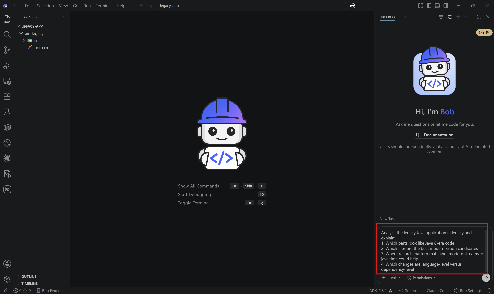
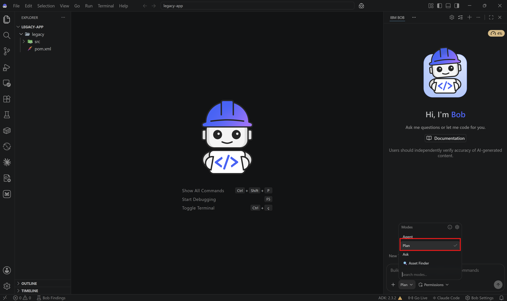

Lab 5: Java Application Modernization with Bob¶
Overview¶
In this lab, you'll use Bob to modernize a legacy Java application by analyzing an older codebase, defining a migration plan, and applying targeted upgrades toward Java 17.
This lab is intentionally more advanced than the previous Bob labs. The goal is not only to refactor code, but to practice how Bob can support a phased modernization workflow across architecture, language features, and dependencies.
Before Starting¶
Make sure you have:
- IBM Bob access
- A JDK for Java 17
- Maven
- A terminal
- A local workspace where Bob can create files and run commands
What You'll Modernize¶
This lab uses the legacy Java project from legacy-app.zip as the starting point.
You will use Bob to:
- Analyze Java 8-style code
- Identify modernization opportunities
- Generate migration notes and planning artifacts
- Create a modernized target structure
- Upgrade language and API usage
What You'll Learn¶
By the end of this lab, you will:
- ✅ Use Bob to inspect a legacy Java codebase
- ✅ Create a phased migration plan
- ✅ Modernize domain models and business logic
- ✅ Update dependencies and build configuration
- ✅ Validate a migration path toward Java 17
Lab Structure¶
- Review the legacy application
- Create a migration plan
- Modernize domain models
- Modernize business logic and APIs
- Update build configuration and dependencies
- Validate the migration
Step 1: Review the legacy application¶
1.1: Download and open the lab folder in Bob¶
Download the legacy application ZIP file here. Extract it to a new local folder and open the extracted project in IBM Bob before starting the lab.

The sample includes models and services such as:
legacy/src/main/java/com/example/ecommerce/model/Product.javalegacy/src/main/java/com/example/ecommerce/model/Order.javalegacy/src/main/java/com/example/ecommerce/service/PaymentService.javalegacy/src/main/java/com/example/ecommerce/service/OrderService.javalegacy/pom.xml
✅ Checkpoint: The legacy Java project is open in your workspace.
1.2: Switch to Ask Mode¶
Change to Ask Mode.

1.3: Ask Bob for a modernization assessment¶
Ask Bob:
Analyze the legacy Java application in legacy and explain:
1. Which parts look like Java 8-era code
2. Which files are the best modernization candidates
3. Where records, pattern matching, modern streams, or java.time could help
4. Which changes are language-level versus dependency-level

✅ Checkpoint: You understand the main modernization opportunities.
Step 2: Create a migration plan¶
2.1: Switch to Plan Mode¶
Change to Plan Mode.

2.2: Ask Bob to create the migration structure¶
Ask Bob:
Create a phased migration plan for upgrading legacy toward Java 17.
Include:
1. A recommended phase order
2. Risks and compatibility concerns
3. Files that should be modernized first
4. What should go into migration-guide/
5. What should go into a future modernized/ target folder
Bob may recommend creating folders such as:
modernized/migration-guide/
That is expected. These folders are part of the modernization workflow and do not need to exist before the lab begins.

✅ Checkpoint: You have a structured migration plan before editing code.
Step 3: Modernize domain models¶
3.1: Switch to Agent Mode¶
Change to Agent Mode.
3.2: Convert a model to a record¶
Let's start with Product.java.
Ask Bob:
Modernize Product.java for Java 17.
Convert it to a record where appropriate, preserve validation, and write the updated file into a modernized/ target structure.
Bob should explain whether a record is appropriate and create the target file accordingly.
✅ Checkpoint: You have completed one focused domain-model modernization.
3.3: Review other model candidates¶
Ask Bob:
Review the remaining model classes and recommend which ones are good candidates for records, sealed hierarchies, or other Java 17 features.
This is a good point to decide whether Payment and related types should become a sealed hierarchy.
✅ Checkpoint: You know which model changes are worth applying next.
Step 4: Modernize business logic and APIs¶
4.1: Improve conditional logic¶
Let's now focus on PaymentService.java.
Ask Bob:
Modernize the conditional logic in PaymentService.java.
Use Java 17 features where appropriate, such as pattern matching or switch expressions, while keeping the behavior the same.
4.2: Improve collection and stream usage¶
We can also explore implementing changes in the OrderService.java.
Ask Bob:
Modernize the collection and stream usage in OrderService.java.
Prefer Java 17-friendly patterns and simplify the code where possible.
4.3: Review API-level modernization¶
Ask Bob:
Identify opportunities in the legacy codebase to replace older APIs with modern alternatives, especially Date/Calendar usage, null-heavy patterns, and older collection idioms.
✅ Checkpoint: You have started modernizing business logic, not just models.
Step 5: Update build configuration and dependencies¶
5.1: Modernize the Maven configuration¶
Ask Bob:
Create an updated Maven configuration for Java 17 based on legacy/pom.xml.
Update compiler settings and identify dependencies that should be reviewed or upgraded.
Write the updated file into the modernized/ target structure.
5.2: Ask for a compatibility review¶
Switch to Plan Mode and ask:
Analyze the Java dependency and build upgrade risks for this migration.
Call out anything that could block a move from Java 8 to Java 17.
This helps you separate easy source refactors from ecosystem-level risks.
✅ Checkpoint: You have both a code plan and a build/dependency plan.
Step 6: Validate the migration¶
6.1: Ask Bob to summarize the migration outcome¶
Ask Bob:
Summarize the migration changes completed so far, the remaining risks, and the next best steps to finish the Java 17 modernization.
6.2: Run validation commands¶
If your environment is ready, ask Bob to run the relevant build or test commands for the migrated target structure.
Switch to Advanced Mode and ask:
✅ Checkpoint: You have validated the migration path and captured the remaining work.
Congratulations 🎉 You’ve completed Lab 5!¶
You’ve successfully used Bob to:
- ✅ Assess a legacy Java codebase
- ✅ Plan a phased modernization
- ✅ Apply targeted Java 17-style improvements
- ✅ Review migration risks across both code and dependencies